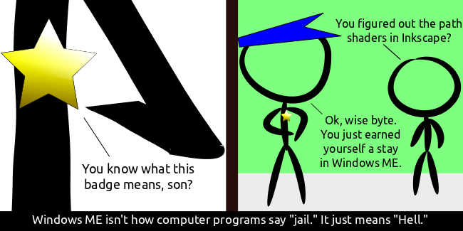

Comic JK 735
When I Feel Like It
⇤
<
?
>
⇥

⇤
<
?
>
⇥
Forum
.
RSS
.
Digg
.
Facebook
.
Reddit
.
Twitter
.
Stumbleupon
Enter your thoughts on number 735 here. Please, no spamming, trolling, or OH GOD THE COLOR SCHEME IT BURNS. Now this is what I call high quality comic >C&H readers: don't change your underwear in the middle of the street. Just go to the bathroom or something. >>C&H: BU? Herp! >>Maybe Jesus had it coming. If he can take being nailed to a t, then he can take a joke. >>>What is Jesus' least favorite candy? Skittles (He can't eat them because he has no palms). >The sacrilege doesn't really bother me. But at least 2/3 just aren't funny. If you're going to be offensive, you should at least be funny. Though every once in a while there is a really great one, so I still poke around over there. >>Sacrilegious and truth sometimes are synonymous. Not always, but certainly more than never. >>>To some people, I think truth is sacrilegious 100% of the time. >>>>Agreed. God can take a joke. They are God, after all. >>>>>I too can take a joke. It's just all my Me damn followers who have no sense of humor. >>>>>>It's funny how that works out. Actually it's kind of sad, as it leads to a great deal of unnecessary violence and hatred. Why do fundamentalist Christians never want to post "Love Thy Neighbor" in court houses? Determinism doesn't destroy morality, just choice. Still gotta act to make wrong-doers right-doers. >Even though what they do has already been determined? >> Deterministic morality! WOO! >>> Deterministic mortality! WOO! >>>>Deterministic mortality - The Tyrell Corporation... ? >>>>>I for one instead believe in free-will. I also blame it for all of the world's problems.